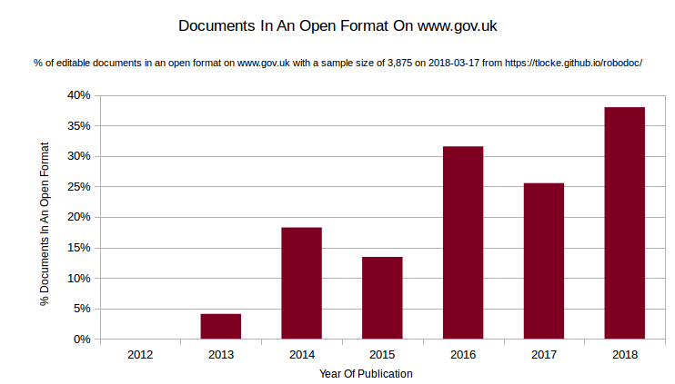

Monitoring UK government websites for their use of open and proprietary document formats.
In 2014 the UK government announced that open standards would be used for sharing government documents.
Unfortunately, not all files on UK government websites are published in
an open format yet, some are still published in a proprietary format. The
RoboDoc project focuses on editable documents that should be in the open
format called ODF. It aims to crawl the UK government websites and make a
list of editable documents and record whether they are in an open or
proprietary format. Files in the ODF format end in odt,
ods or odp. Files in a proprietary format
commonly end in doc, docx, xls and
xlsx.
I did another run on 17th March, and the result are available for download. This time it looked at 80,000 pages and it showed that 21% of documents are in an open format. Here's a graph of the results broken down by year of publication:
The latest run of the RoboDoc crawler tells us that of the documents published in 2018, only 12% were in an open format. Now that we've got some reasonable data, the next question is how to use it to increase that percentage. I tweeted about this, and here's the conversation:
@OpenForumEurope only 14% of editable docs on http://www.gov.uk are in an open format https://tlocke.github.io/robodoc/ not sure where to go from here
Maël Brunet @MaelB
Mar 6
Replying to @t_locke @OpenForumEurope
Cool project ! We did something a while ago at EU level http://fixmydocuments.eu/ the figures we found were even lower than yours in the UK.
Maël Brunet
@MaelB
Mar 6
Also unsure what can be done to improve. We tried a bit of name & shame + contacting the relevant services but there's just so many documents out there. Unfortunately I think this is seen as a very low priority.
So, I've decided to pick a document that was published in a
proprietary in 2018:
https://www.gov.uk/government/uploads/system/uploads/attachment_data/file/686899/Country_returns_guide_-_March_2018.xls
and contact the government about that single document. On
the page
that links to this document, there's a link called 'Is there anything
wrong with this page?'. Clicking on the link reveals a form with two
fields. Here's what I submitted:
What were you doing?
Clicking on the link https://www.gov.uk/government/publications/country-returns-guide on the page https://www.gov.uk/government/publications/country-returns-guide.
What went wrong
The spreadsheet is in a proprietary format, but as I understand it, government policy is to publish spreadsheets in the open format ODF:
https://www.gov.uk/government/news/open-document-formats-selected-to-meet-user-needs
Thanks for your help,
Tony Locke
tlocke@tlocke.org.uk
I'll post an update if I get a reply.
| 2012 | 2013 | 2014 | 2015 | 2016 | 2017 | 2018 |
|---|---|---|---|---|---|---|
| 0% | 0% | 2% | 10% | 12% | 28% | 12% |
.xls,
.xlsx, .doc or .docx. The titles
of the CSV are:
document_url: The URL of the offending document.
file_extension
link_url: The page that the link to the document is on.
crawl_timestamp: The point in time when the document
was found.
.xls, .xlsx,
.doc or .docx. The titles of the CSV are:
document_url: The URL of the offending document.
file_extension
link_url: The page that the link to the document is on.
crawl_timestamp: The point in time when the document
was found.
The spreadsheets are licensed under a Creative Commons Attribution 4.0 International License.
If a document is written in an open format, anyone can freely write editing and viewing software for the format. This means that users aren't beholden to a single vendor of software. In contrast, if a document is written in a proprietary format, then the user can be locked-in to using software from a single vendor.
For example, web pages are written in the open format HTML, which means there's a good choice of web browser (eg. Microsoft Internet Explorer, Mozilla Firefox, Apple Safari or Google Chrome).
A WikiBook on open standards has been written which includes a section on the benefits of open standards.
The RoboDoc code is on GitHub at https://github.com/tlocke/robodoc. Suggestions, contributions or bug reports are very welcome. Please open a new issue on GitHub.